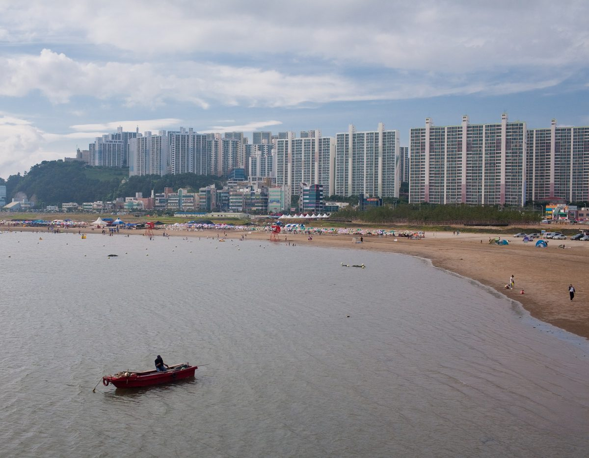

다대포 해상풍력 사업자, 사하구 청년회와 청년 고용·지역 공급망 협약…99MW 고정식 해상풍력

부산해상풍력발전, 교육·훈련·취업 연계와 관광자원화 추진…사업자 측 주민조사 찬성 56.7%·반대 26.7%, 고용효과 1,112명 분석, 주민 지분·배당 방안은 협약에 없어
부산 다대포 앞바다에 99MW 규모의 해상풍력을 추진하는 부산해상풍력발전㈜이 23일 사하구 청년회와 지역 청년 고용과 공급망 육성을 위한 업무협약을 맺었다. 두 기관은 단지 건설과 운영에 지역 기업과 인력의 참여를 넓히고 사하구 청년을 위한 교육·훈련과 취업 연계 방안을 찾으며, 발전단지를 관광자원으로 활용하는 등 지역 상생사업도 함께 발굴하기로 했다. 다대포 해상풍력은 다대포해수욕장에서 약 3~5km 떨어진 바다에 들어서는 고정식 해상풍력으로, 사업자 측은 국내 첫 공공주도형 사업이라고 소개하고 있다. 사업자 측이 인용한 3월 동아대학교 연구는 개발·건설과 운영, 공급망을 합친 고용 창출 효과를 1,112명으로 분석했고, 5월 에스티이노베이션이 사하구 주민 1,010명을 조사한 결과 찬성 56.7%, 중립 16.6%, 반대 26.7%로 나왔으며 사업지와 맞닿은 다대1동의 찬성은 74.7%였다. 사업자는 5월 다대1동 청년회와도 협약을 맺었으며, 황준석 사하구 청년회장은 "사업의 혜택이 지역사회와 청년들에게 실질적으로 돌아가도록 사업자와 적극 협력하겠다"고 말했다. 이번 협약에는 주민 지분 참여나 수익 배당 같은 이익공유 방안은 담기지 않았다.
시민에너지 관점
주민 네 명 가운데 한 명꼴로 반대하는 사업에서 일자리와 공급망 협력은 지역이 얻을 몫의 출발점일 뿐이다. 건설이 끝나면 일자리가 줄고 자격을 갖춘 일부에게만 돌아간다는 한계가 있는 만큼, 바다라는 공유자원에서 나오는 전기 판매 수익을 주민이 나눌 길도 함께 열려야 한다. 덴마크 삼쇠섬은 섬 주민과 지자체가 육상·해상 풍력발전기의 지분을 나눠 가지면서 발전 수익이 섬 안에 머물고 주민이 풍력단지를 자기 사업으로 받아들이는 본보기가 됐다. 공공주도형을 내세운 만큼 다대포 사업도 사하구 주민과 청년이 소액으로 출자해 지분을 가질 수 있는 몫을 처음부터 열어 두어야 한다.
출처: 국토일보 2026-10-26 조성구 원문 보기
多大浦洋上風力の事業者、沙下区青年会と青年雇用・地域サプライチェーンで協約…99MWの着床式洋上風力
釜山洋上風力発電、教育・訓練・就職連携と観光資源化を推進…事業者側の住民調査で賛成56.7%・反対26.7%、雇用効果1,112人と分析、住民の持ち分・配当策は協約に含まれず
釜山・多大浦沖で99MW規模の洋上風力を進める釜山洋上風力発電が23日、沙下区青年会と、地域の青年雇用とサプライチェーン育成のための業務協約を結んだ。両者は、発電団地の建設と運営への地元企業と人材の参加を広げ、沙下区の青年向けの教育・訓練と就職連携の方策を探るとともに、発電団地を観光資源として活用するなど地域共生事業も共同で発掘することにした。多大浦洋上風力は多大浦海水浴場から約3〜5km離れた海上に建設される着床式洋上風力で、事業者側は国内初の公共主導型事業だと紹介している。事業者側が引用した東亜大学の3月の研究は、開発・建設と運営、サプライチェーンを合わせた雇用創出効果を1,112人と分析し、5月にエスティイノベーションが沙下区の住民1,010人を対象に行った調査では賛成56.7%、中立16.6%、反対26.7%となり、事業地に接する多大1洞の賛成は74.7%だった。事業者は5月に多大1洞青年会とも協約を結んでおり、沙下区青年会のファン・ジュンソク会長は「事業の恩恵が地域社会と青年に実質的に還元されるよう、事業者と積極的に協力したい」と述べた。今回の協約には、住民の持ち分参加や収益配当といった利益共有策は盛り込まれていない。
市民エネルギーの視点
住民の4人に1人ほどが反対する事業において、雇用とサプライチェーンでの協力は、地域が得るべき取り分の出発点にすぎない。建設が終われば雇用は減り、資格を持つ一部の人にしか回らないという限界がある以上、海という共有資源から生まれる売電収益を住民が分かち合う道も同時に開かれるべきだ。デンマークのサムソ島では、島の住民と自治体が陸上・洋上の風力発電機の持ち分を分け合うことで、発電収益が島の中にとどまり、住民が風力発電所を自分たちの事業として受け入れる手本となった。公共主導型を掲げる以上、多大浦の事業も、沙下区の住民と青年が少額で出資して持ち分を持てる枠を最初から開いておくべきだ。
出典: 国土日報（Kukto Ilbo） 2026-10-26 チョ・ソング 原文を読む
多大浦海上风电开发商与沙下区青年会签署青年就业与本地供应链协议，项目为99MW固定式海上风电
釜山海上风力发电推进教育、培训、就业衔接及旅游资源化…开发商方面的居民调查显示赞成56.7%、反对26.7%，就业效果分析为1,112人，协议未涉及居民持股或分红
在釜山多大浦近海推进99MW海上风电项目的釜山海上风力发电公司23日与沙下区青年会签署业务协议，旨在促进本地青年就业和培育本地供应链。双方商定扩大本地企业和人力参与风电场建设与运营，为沙下区青年探索教育、培训和就业衔接方案，并共同发掘把风电场用作旅游资源等地区共生项目。多大浦海上风电位于距多大浦海水浴场约3～5公里的海域，为固定式海上风电，开发商称其为韩国首个公共主导型项目。开发商援引的东亚大学3月研究分析认为，开发建设、运营和供应链合计可创造1,112个就业岗位；调查机构ST Innovation于5月对1,010名沙下区居民进行的调查显示，赞成56.7%、中立16.6%、反对26.7%，与项目地相邻的多大1洞赞成率为74.7%。开发商5月还与多大1洞青年会签署了协议，沙下区青年会会长Hwang Jun-seok表示：“将积极与开发商合作，让项目的好处切实回馈地区社会和青年。”此次协议没有包含居民持股或收益分红等利益共享方案。
市民能源视角
在大约每四名居民就有一人反对的项目中，就业和供应链合作只是地区应得份额的起点。项目建成后就业岗位会减少，而且只惠及具备资格的少数人，因此还应同时打开让居民分享海洋这一公共资源所产生售电收益的渠道。丹麦萨姆索岛的岛民和地方政府分别持有陆上和海上风机的股份，发电收益留在岛内，居民也把风电场当作自己的事业，成为一个典范。既然以公共主导型为号召，多大浦项目也应从一开始就留出让沙下区居民和青年小额出资、持有股份的份额。
来源: Kukto Ilbo 2026-10-26 Cho Seong-gu 查看原文
Dadaepo offshore wind developer signs youth jobs and local supply chain pact with Saha-gu youth association for 99MW fixed-bottom project
Busan Offshore Wind Power to pursue training, job placement and tourism use; developer-cited survey shows 56.7% support and 26.7% opposition and a study puts job creation at 1,112, while the pact contains no resident equity or dividend plan
Busan Offshore Wind Power, which is developing a 99MW offshore wind farm off Dadaepo in Busan, signed a memorandum of understanding on the 23rd with the Saha-gu youth association to promote local youth employment and supply chains. The two sides agreed to widen the involvement of local companies and workers in building and running the farm, to look for training and job-placement routes for young people in Saha-gu, and to develop local partnership projects such as using the wind farm as a tourist attraction. The Dadaepo project is a fixed-bottom offshore wind farm about 3 to 5km off Dadaepo Beach, which the developer describes as Korea's first public-led project of its kind. A March study by Dong-A University cited by the developer estimated job creation across development, construction, operation and the supply chain at 1,112, and a May survey of 1,010 Saha-gu residents by ST Innovation found 56.7% in favour, 16.6% neutral and 26.7% opposed, with support at 74.7% in Dadae 1-dong, the neighbourhood next to the site. The developer also signed an agreement with the Dadae 1-dong youth association in May, and Hwang Jun-seok, head of the Saha-gu youth association, said it would "actively cooperate with the developer so that the project's benefits genuinely reach the local community and young people." The agreement contains no benefit-sharing measures such as resident equity stakes or dividends.
Citizen Energy View
In a project opposed by roughly one resident in four, cooperation on jobs and supply chains is only the starting point of what the community should gain. Construction jobs shrink once building ends and go only to those with the right qualifications, so a route for residents to share in the revenue from electricity generated from the sea, a common resource, needs to be opened as well. On the Danish island of Samsø, residents and the municipality hold shares in the onshore and offshore wind turbines, keeping generation income on the island and making the wind farms something islanders regard as their own. Since the Dadaepo project bills itself as public-led, it should set aside from the outset a share that Saha-gu residents and young people can buy into with small investments.
Source: Kukto Ilbo 2026-10-26 Cho Seong-gu Read the original